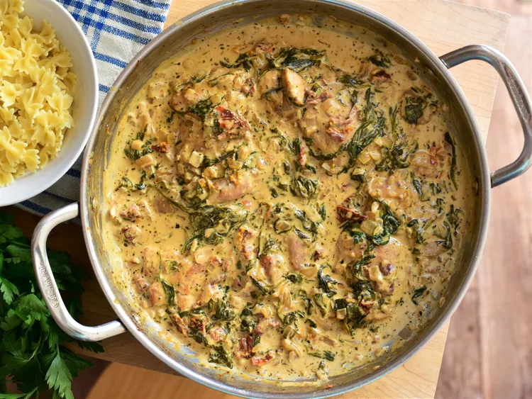

Creamy Tuscan Chicken Pasta Recipe

Creamy chicken pasta dish with lots of flavor
This flavor-rich Italian dish will have you eating with your eyes long
before you say AAHH!
Ingredients
- 3 tablespoons olive oil
- 4 skinless, boneless chicken thighs
- ¾ teaspoon kosher salt
- ¼ teaspoon ground black pepper
- 1 large onion, finely chopped
- 4 cloves garlic, minced
- ½ cup dry white wine
- ½ cup chopped, drained oil-packed sun-dried tomatoes
- 1 cup low-sodium chicken broth
- 1 ½ teaspoons italian seasoning
- 4 cups fresh baby spinach
- 1 cup freshly grated aged Asiago cheese
- 1 cup heavy cream
- 1 tablespoon freshly squeezed lemon juice
- 1 (16 ounce) package mini farfalle pasta
Directions
- Heat olive oil in a large skillet over medium-low heat.
-
Season both sides of chicken thighs with salt and pepper, and place into
hot skillet. Cook until golden, thighs are no longer pink in the center,
and the juices run clear, 8 to 10 minutes per side. An instant-read
thermometer inserted near the center should read 165 degrees F (74
degrees C). Remove chicken thighs from pan; set aside.
-
Reduce heat to low; add onion and garlic to skillet. Cook and stir until
softened, about 5 minutes. Pour in white wine and use a wooden spoon to
scrape up any browned bits from the bottom of the pan. Cook until wine
is almost evaporated, 3 to 5 minutes.
-
Add in sundried tomatoes and cook for 1 minute. Stir in chicken broth
and Italian seasoning. Bring to a simmer, and cook until mixture has
slightly reduced, about 5 minutes. Add spinach to skillet and cook until
wilted, 1 to 2 minutes.
-
Reduce heat to low; stir in Asiago and heavy cream until well combined.
Stir in lemon juice. Season to taste with salt and ground black pepper.
-
Return chicken thighs to skillet; heat until warm, 5 to 7 minutes. Turn
off heat; allow pan to sit off heat while cooking the pasta. Sauce will
thicken as it cools.
-
Fill a large pot with lightly salted water and bring to a rolling boil.
Stir in mini farfalle; return to a boil. Cook pasta uncovered, stirring
occasionally, until tender yet firm to the bite, 7 to 8 minutes; drain.
-
Divide pasta between four bowls, and top each with chicken thighs and
sauce to serve.
Cook's note:
You can use boneless, skinless chicken breasts instead of chicken thighs,
if desired—just be sure to adjust the cooking time. You can also use 1
teaspoon garlic powder in place of the garlic cloves. You can swap
Parmesan, or any other hard cheese you like, in place of the Asiago.